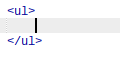
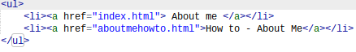
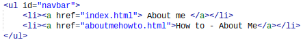
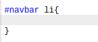
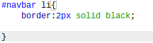
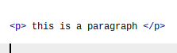
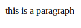
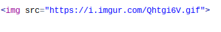

How To Page
How to create a Navbar
The first thing that I'm going to show you is how to create a navbar.
A nav bar is short for a navigation bar. A navigation bar appears on the
screen, most of the time at the top of the page, and can take the user to
other html pages. So how do you do this, well first off we have to start with
creating an unordered list. This will make it so the users have a choice on
what to pick. The way you do this is by writing <h1>for the starting tag
and </h1> for the ending tag. It will look something like the first picture.
Then, you want to create the names for the other pages you want to redirect them to.
The way you do that is by creating a link that the user can use. To create a link
that the users can use, you want to put <a href> for starting tag and </a>
for the ending tag. This will make it so that there is a url that the user
can click on. And inbetween those tags, you want to put the name of the page you want
to redirect them to. It should look like Picture 2. The next thing you want to do is
create an id the way you create and id is by putting id="id name" inside of the
bracket that had the element you want to change. Im my case, I named the navbar, navbar.
it should look like picture 3. now, we're done with the Navbar. You have created a Navbar
but it doesn't look as good as mine. Dont worry ill show you how to make it look pretty.



The next thing we are going to be doing is writing in css (Cascading Style Sheet) but
inorder to write in css, you need to switch the language from html to css. To do that, you need to
create a style tag. Creating a style tag will change the languange inside the tag to css instead of
html. The reason that we have to change the language to css and not use html is because css is meant to
modify html pages to make it appealing to the user. For this example, we're going to be using css to help
make the navigation bar look pretty. The way you create a style tag is by using a starting tag <style>
and ending tag </style>. Now that we've changed the laguage to css. We can begin to implement the components
that make the navigation bar special. We're going to start off with creating a border around the text in the navbar.
To do that, you have to go to css and state what element you want to change. For my nvabar, since my the id for my
navbar is navbar, im going to write #navbar in the beginning to tell the computer that im talking about that certain
element. Then we're going to put li after navbar so it knows we are talking about the list items.
Then im going to put curly brackets. You write rules inside the curly brackets in order to tell what the
element should do. So far it should look like picture 1. The next thing you want to do is create a border. A border is a
line surrounding the text. To do this, you want to put inside the curly brackets border: 2px solid black.
The "2px" tells the computer how thick you want the border to be. The "solid" instruction tells the border to have a solid
line around the border and not an invisible or dotted line. Finally the "black" instuction tells the border what color
the border should be. In this case, the color of the border is black. It should look like Picture 2. Now that we have a border
, you can change the color of the back ground by putting background-color:(color here) inside of the brackets. You can also put border
radius to make the edges rounded. But to make sure that the text always fits in the border you must put the code display:inline-block;
This code will make it so the border is around the words you put in. Finally if you want to change the colors once the mouse hovers over
a have to add 3 simple lines of code. First you want to start off by naming the element you want to change which is the navbar.
We call the navbar in css with a # symbol. After puttng #navbar li: we put hover. After that we change the background color. This will make
it so if the mouse hovers the navbar, the background of the border will change.


How to create paragraphs
Creating paragraphs is one of the easiest codes to learn. To being a paragraphs
you start with the tag <p> and end with the tag </p>


How to create images
images are relatively simple to create. The first thing you want to do is create the image tag.
it looks like <img src=" "> The image tag is self closing so you don't have to
put an ending tag. You put the URL inside of the quotation marks and the picture should show on
the page.
